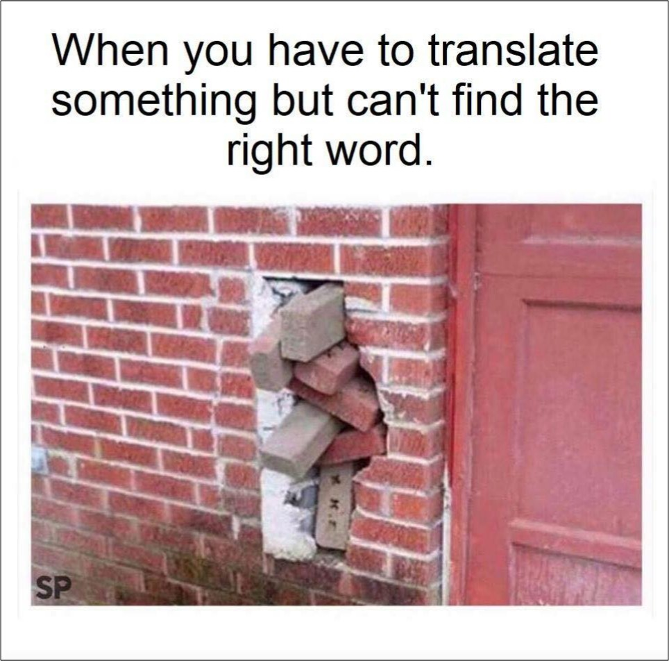

Words in InSAR Research
Words in InSAR Research
This post is about every new words about InSAR during research, and it’s references!
New Word

| Word | Meaning | Chinese | Example |
|---|---|---|---|
| retain |
|
保留，保持，保有 保存；留住；容纳 |
SBAS-InSAR techniques can overcome the limitations of DInSAR to some degree by analyzing the pixels that retain stable scattering characteristics in a time series to obtain ground deformation information. |
| preliminary |
|
初步的，起始的；预备的 开端活动，初步行动 |
Then, the development of land subsidence in BTH was preliminarily investigated. |
| suppress |
|
（用武力）镇压，压制，制止 抑制，忍住，压抑；查禁 |
First, the low-pass filtering in the spatial domain is used to suppress the noise phase from the residual. |
| superpose |
|
vt. 放在上面,重叠 | Thirdly, we superpose the non-linear phase to the linear phase to acquire the complete deformation phase. |
| alleviate |
|
vt. 减轻, 缓解, 缓和 | Since the MSWDP began operation in 2015, the urban water supply has been alleviated, and land subsidence has been slowed to some degree. |
| fluctuation | NOUN
|
变动, <行市> 混乱 波动,起伏,涨落 |
In Figure 14, the groundwater level shows a drop with a significant fluctuation trend, especially in wells h to j. |
| resultant | ADJECTIVE
|
形容词 作为结果而产生的 合成的 物理 合力 可数名词 结果[of] 物理合力,合成运动 数学结式 |
Doppler separations are below the threshold values, which depend on data availability for the specific application and the expected rate of decorrelation for the given terrain, ensures that the resultant network of image pairs contains no isolated clusters |
| fluvial | ADJECTIVE of, relating to, or occurring in a river | 1 河川的 因河流的作用而形成的 |
The delta is impacted by decreased fluvial sediment supply, salinization, coastal erosion and global sea-level rise. |
| sediment | VARIABLE NOUN Sediment is solid material that settles at the bottom of a liquid, especially earth and pieces of rock that have been carried along and then left somewhere by water, ice, or wind. | 沉淀物,渣 『地质』沉积物 |
The delta is impacted by decreased fluvial sediment supply, salinization, coastal erosion and global sea-level rise. |
| inundation |
|
泛滥,淹水,洪水 充满,涌到[of]an ~ of letters ( 雪片般) 涌到的信函 |
which increases its vulnerability to flooding, salinization, storm surges, coastal erosion and, ultimately, threatens the delta with permanent inundation. |
| iterative |
|
adj. 重复的 反复的 迭代的 |
This is an iterative step that estimates the phase noise value for each candidate pixel in every interferogram. |
| sparse | ADJECTIVE Something that is sparse is small in number or amount and spread out over an area. | <<形容词>> <人口等> 稀疏的,稀少的 <头发、树丛等> 稀疏的 |
Unfortunately, as many deltas around the world are located in data sparse regions, high-accuracy elevation data is often not available, or - when existing - not publicly accessible. |